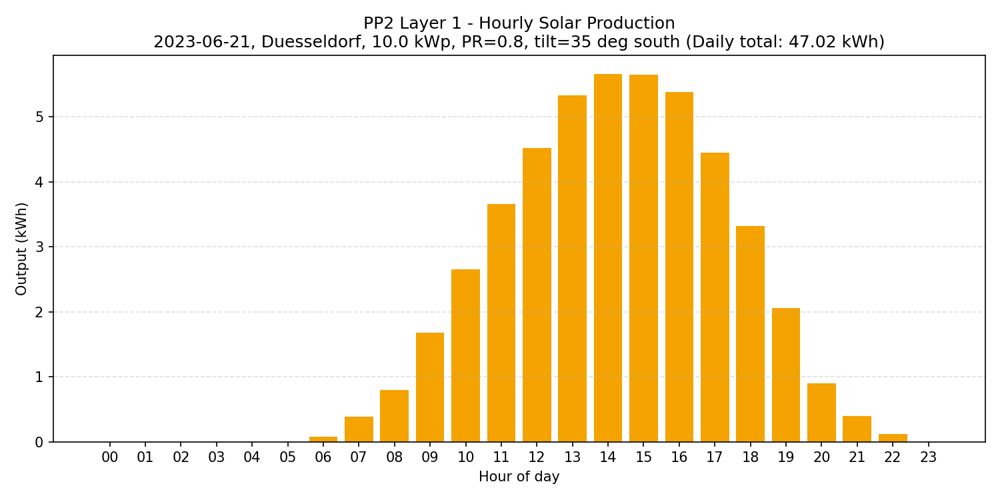
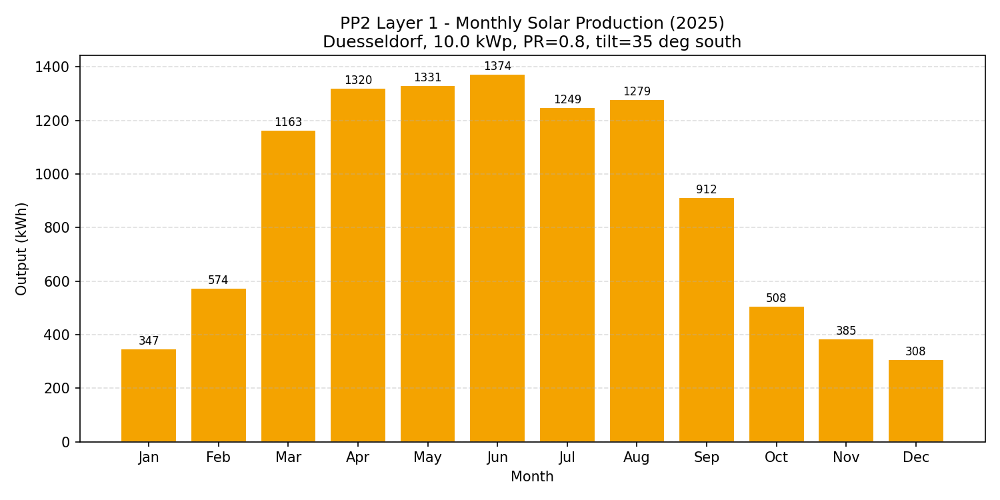

Layer 1 — Solar Production Modeling
Hourly and full-year PV output estimator (Open-Meteo ERA5 Global Tilted Irradiance), validated against 100 real rooftops from the Solarkataster NRW cadastre.
ERA5 (Open-Meteo)
A historical weather reanalysis dataset from ECMWF/Copernicus: it combines real observations with physics-based modeling into a continuous, gridded hourly record going back to 1940. That's what makes an hourly solar-irradiance estimate for any past date and location possible in the first place. Docs →
Solarkataster NRW
The state government's official rooftop solar potential map for Nordrhein-Westfalen, built from LiDAR laser scans of every roof in the state — giving per-roof tilt, orientation, shading, and installable capacity at cadastre-grade accuracy. Source →


The single-day MVP run above uses 2023-06-21 — the summer solstice — deliberately, not at random: it's the longest, highest-irradiance day of the year, making it the best-case clear-sky scenario for an initial formula sanity check before scaling up.
Reading the offset map
Each dot is one rooftop. "Offset" is the percent difference between our ERA5-based yield estimate and the Solarkataster cadastre's own official figure for that same roof. Every roof here reads consistently around +17%, and that consistency is the point: 2025 was an anomalously sunny year in the ERA5 record relative to the multi-year DWD climatological baseline the cadastre uses, so a uniform upward offset is expected from a single-year comparison. The tight 0.28% standard deviation across all 100 roofs is the evidence that the formula itself is accurate — if it were wrong, the offset would vary roof-to-roof instead of moving together as one consistent shift.
Validation result: across the 100 roofs, our ERA5-based yield estimate is consistently +17.1% above the Solarkataster's own cadastre figure, with a tight 0.28% standard deviation. That tightness shows the pipeline is internally consistent; the offset itself is explained by 2025 being an anomalously sunny year in the ERA5 record compared to the DWD climatological baseline the cadastre uses — not a formula error.
Duesseldorf: Potential vs. Actual
An earlier pass covered pitched roofs only (716,356 kWp), which understated total potential by excluding flat roofs entirely. Flat-roof figures are cadastre-sourced (Solarkataster's own 21.7%-efficiency methodology, assuming south-facing mounting), not a fallback estimate — see the README for the data-quality check behind that. Even combined, this is still a floor estimate, not the full physical ceiling: roofs below the 10 kW size threshold, and shading/structural/economic constraints the cadastre doesn't model, are still excluded.
Layer 2 — NRW BESS + PV Inventory
Battery storage and PV unit inventory for all of Nordrhein-Westfalen, sourced from the Marktstammdatenregister (MaStR) via open-mastr. NRW-wide figures are shown for context; Duesseldorf and its surrounding area are the focus.
Why battery storage matters here: the BESS inventory below shows how much battery storage capacity already exists locally — capacity that could, in principle, absorb solar output generated on a given day rather than exporting it or curtailing it. This is framing only for now: no charge/discharge matching or absorption calculation has been done yet — that's Phase B.